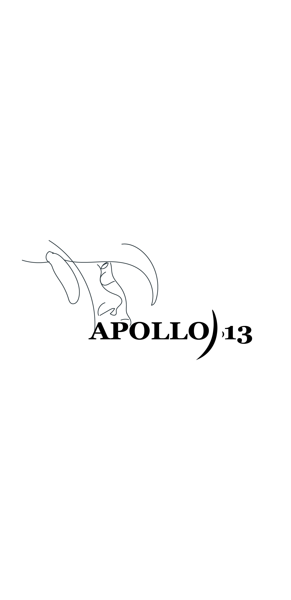
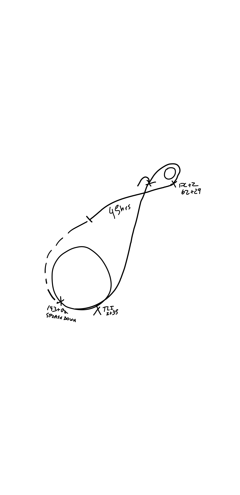
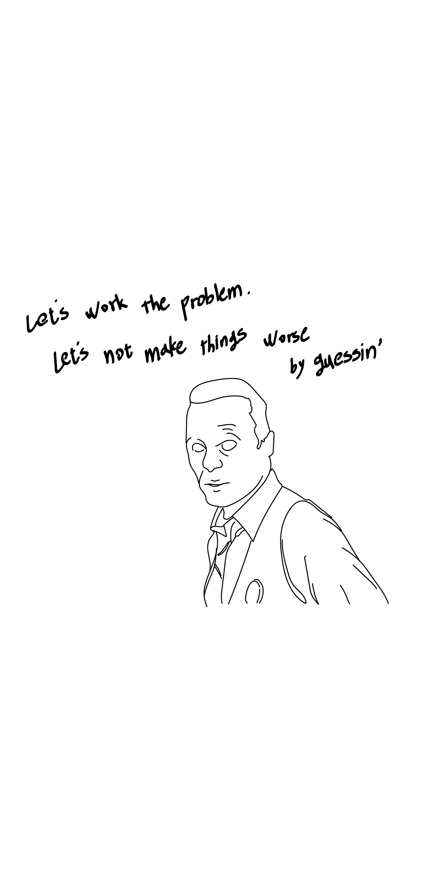

<!doctype notepad>
<notepad>
<head>
  <style type="text/css">
    body {font-family:나눔스퀘어 ExtraBold}
    *{color:black;}
    a {text-decoration:none; color:#000000}
    a:hover{color:#385088;}
    #grid1{
      display:grid;
      grid-template-columns: 0.7fr 0.3fr;
    }
    #grid2{
      display:grid;
      grid-template-columns: 0.3fr 0.7fr;
    }
    li{border-left:3px solid black; list-style: none;}
    li:first-child{border-left:none;}
    div{padding:50px}
    div li a p:hover{color:#70a0ff}
    #pics{margin:auto;}
    #pics div{float:left ;width: 288px; font-family:나눔스퀘어 Light;padding: 0; margin:0 auto;}
    #pics div img{width:250px; text-align:center}
  </style>
  <title>notepad</title>
  <meta charset="utf-8">

</head>
<body style="text-align:center;">
  <h1 style="font-size:50px; padding:50px; margin-top:20px"><a href="aem.html">arch.e.mantra</a></h1>
  <h2 style="font-size:30px; padding-bottom:50px"><a href="NOTEPAD.html">NOTEPAD</a></h2>

  <div id="grid1">
    <li>
      <p>APOLLO 13</p>
      <div id="pics">
        <div><br/>[movie poster]<br/>apollo 13</div>
        <div><br/>[return orbit]<br/>a successful failure within NASA in their respective roles.</div>
        <div><br/>[Do not guessin']<br/>The more confused the situation, the more calm we remain</div>
      </div>
    </li>
    <li>
      <p style="text-align:right; margin-right:20px">Date. 2020.03.18</p>
      <p style="font-family:나눔스퀘어 Light; text-align:left; padding:20px">
        "Successful Failure"<br/>
        Risk factors can be an oppertunity.<br/>
        Uncertain, not Ambiguous<br/>
        Unknown Risk ≠ Ambiguous<br/><br/>
        Construction industry needs players, knowledge, and communication like social media. Their interections are amplified by the butterfly effect, witch amplifies uncirtainty.
      </p>
    </li>
  </div>

  <div id="grid2">
    <li><p style="text-align:right; margin-right:20px">Date. 2020.03.24</p>
    <p style="font-family:나눔스퀘어 Light; text-align:left; padding:20px">
      When you feel 'groggy', stay 'mantra'.<br/>
      : After reading "People Who Are Tired Even After Rest," written by Lee Si-hyung.<br/>
    </p>
    </li>
    <li><p>MANTRA<p/>
      <div id="pics">
        <div><br/>GROGGY; <br/>When the dopamine doesn't have a brake, or when you repeat a non-brake routine,
It's what the brain feels.</div>
        <div><br/>MANTRA; <br/>slowly, leisurely</div>
      </div>
    </li>
  </div>

<!--현재
<div id="grid1">
  <li><p>Theme<p/>
  <p>illustration</p></li>

  <li><p style="text-align:right; margin-right:20px">Date.</p>
  <p style="font-family:나눔스퀘어 Light; text-align:left; padding:20px">summary</p></li>
</div>

<div id="grid2">
  <li><p style="text-align:right; margin-right:20px">Date.</p>
  <p style="font-family:나눔스퀘어 Light; text-align:left; padding:20px">summary</p></li>

  <li><p>Theme<p/>
  <p>illustration</p></li>
</div>
-->

<!--초판
  <div style="width: 55%; height:360px; border:1px solid #385088; float: left; margin-left:100px;">
    <p style="text-align:left; margin-left:10px">Illustration<p>
  </div>
  <div style="width: 30%; height:360px; border:1px solid #385088; float: right; margin-right:100px">
    <p style="text-align:left; margin-left:10px">Summary<p>
  </div>

  <div style="width: 30%; height:360px; border:1px solid #70a0ff; float: left; margin-left:100px">
    <p style="text-align:left; margin-left:10px">Summary<p>
  </div>
  <div style="width: 55%; height:360px; border:1px solid #70a0ff; float: right; margin-right:100px">
    <p style="text-align:left; margin-left:10px">Illustration<p>
  </div>
-->
</body>
</notepad>
